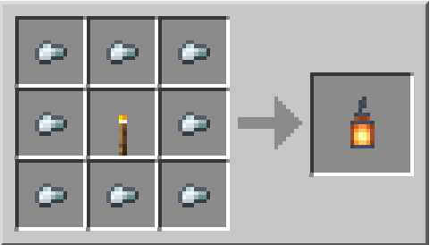
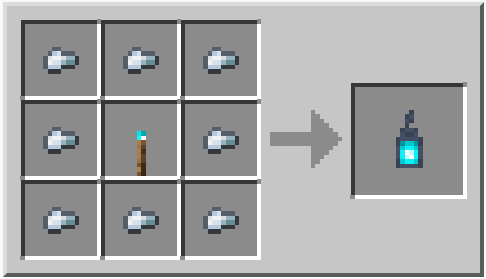

Lanterna
| Nome | Lanterna |
|---|---|
| Id | 169/170 |
| Tipo | Blocco Parziale |
| Rinnovabile | Si |
| impilabile | si(64) |
| Attrezzo | Piccone |
| Tipo Attrezzo | Legno |
| Resistenza Esplosioni | 3.5 |
| Durezza | 3.5 |
| Luminositá | 15 |
| Trasparenza | No |
| Infiammabile | No |
Le lanterne sono blocchi che emettono luce.
Le lanterne delle anime sono delle varianti realizzate con la torcia delle anime.
Fabbricazione
 I crafting delle due tipologie di lanterna sono molto simili cambia solo la torcia che viene messa nel mezzo che é una torcia normale per la lanterna, é invece una torica delle anime per la lanterna delle anime
Reperibilitá
Le normali lanterne possono generarsi come lampade o lampioni sopra le fattorie e su alcuni edifici dei villaggi della tundra.
Le lanterne si trovano anche nei resti del bastione.
Informazioni
Le lanterne emettono un livello luce di 15, che è leggermente superiore a quello di una torcia.
Le lanterne possono essere posizionate in alto o appese sotto la maggior parte dei blocchi solidi, anche se alcuni richiedono al giocatore di posizionarsi in modo furtivo.
Quando viene posizionata sotto un blocco, la lanterna sembra sospesa.
Le lanterne delle anime respingono i piglin.